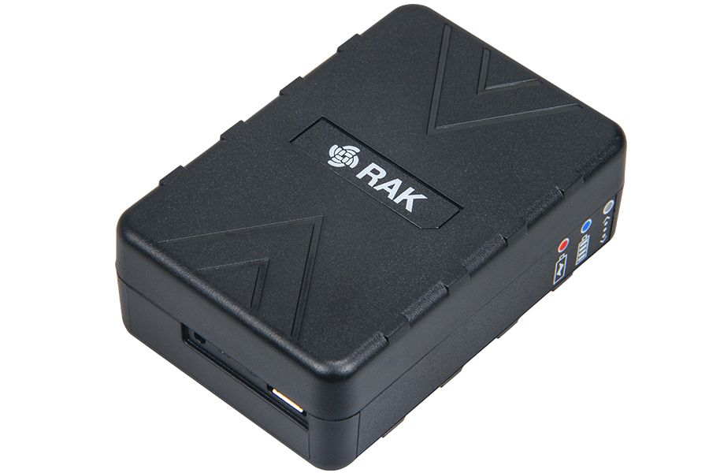

RAK7200 LoRa® Tracker

Product Background
The RAK7200 LoRa® Tracker is a LoRa® Tracker device with a 3.7V rechargeable Li-Ion battery and a GPS modem. It is built around low power LoRa® Module, which integrates the ultra low power STM32L073 micro-controller, a SX1276 LoRa® long range modem and a CXD5603GF GPS modem.
The device can be used as a quick prototyping tool for LoRaWAN™ application development. It is suited for IoT Applications such as asset tracking, smart vehicle management and location-based services.
Product Features
- Supports sleep mode, low power consumption.
- Built-in digital motion sensor LIS3DH, which has dynamic user selectable full scales of ±2g/±4g/±8g/±18g and is capable of measuring accelerations with output data rates from 1Hz to 5kHz.
- Built-in nano pressure sensor LPS22HB, which functions as a digital output barometer.
- Built-in a 9-axis sensor, which includes a triple-axis gyroscope, a triple-axis accelerometer, and a triple-axis magnetometer.
- LoRaWAN™ 1.0.2 protocol stack support - ABP or OTAA mode.
- LoRa® and GPS antenna are integrated inside the casing.
- Micro USB for configuration and charging of the battery
- Supports global license-free frequency band: IN865, EU868, US915, AU915, AS920, KR920, and AS923.